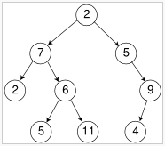

Módulos. Input/output. Interação com o utilizador. Exercícios 28 e 29.
O nome do tipo exportado deve ser
A representação interna deve ser a seguinte:
Eis a lista de funções públicas pretendidas. Tente fazer as primeiras quatro durante a aula.
Exemplos:
make [1;2;3] = Node (1, Nil, Node (2, Nil, Node (3, Nil, Nil)))
max (make [1;2;3]) = 3

A função store escreve no ficheiro, primeiro a raiz, depois a sub-árvore esquerda, depois a sub árvore direita. A árvore vazia é escrita como "-".
open BinTree ;; make [1;2;3;4;5] ;; - : BinTree.tree = <abstr>
$ ocaml
Objective Caml version 3.12.1
# #load "BinTree.cmo" ;;
# open BinTree ;;
# make [1;2;3;4;5] ;;
- : BinTree.tree = <abstr>
Os comandos que o programa deve suportar são os seguintes:
Um programa standalone define-se como uma sequência de funções terminada pela chamada duma função que se designa por função principal (muitas vezes dá-se o nome de main à função principal). Um programa standalone tem a responsabilidade de gerir todo o seu input e output, pois não tem o interpretador ocaml a ajudar.
Note que a função split é um exemplo de aplicação do método indutivo a strings. A chamada recursiva é sobre o argumento xs, que representa a "cauda" da string.
open BinTree ;; (* Abre o modulo das árvores *)
(* Método indutivo aplicado a strings. A função cut "separa a cabeça da cauda", numa string. *)
let cut s = (* pre: s <> "" *)
(String.get s 0, String.sub s 1 ((String.length s)-1))
;;
(* Método indutivo aplicado a strings. A função join adiciona um char à cabeça numa string. *)
let join x xs =
(Char.escaped x)^xs
;;
let rec split s = (* parte a string s no primeiro ' ' e produz um par ordenado de strings *)
if s = "" then ("", "") (* primeiro caso base *)
else
let (x,xs) = cut s in (* separa cabeça da cauda *)
if x = ' ' then ("", xs) (* segundo caso base *)
else let (a,b) = split xs in (* caso geral - chamada recursiva para a cauda *)
(join x a, b)
;;
let help () =
print_string "Comandos válidos:\n" ;
print_string " mostra fich\n" ;
print_string " maximo fich\n" ;
print_string " ajuda\n" ;
print_string " sair\n"
;;
let byeBye () =
print_string "Até à vista!\n";
exit 0
;;
let exec comm filename = (* falta apenas completar esta funcao *)
match comm with
"mostra" -> ()
| "maximo" -> ()
| "ajuda" -> help ()
| "sair" -> byeBye ()
| _ -> help ()
;;
let error mesg =
output_string stderr mesg ;
output_string stderr "!\n" ;
flush stderr
;;
let rec main () = (* ciclo de interpretacao *)
(try
print_string "> " ;
let line = read_line () in
let (comm, fileName) = split line in
exec comm fileName
with
End_of_file -> byeBye ()
| Sys_error str -> error str
| _ -> error "Erro") ;
main ()
;;
main () ;; (* Esta linha faz o programa começar a correr aqui *)
a) Escreva uma função indutiva
countEmpty: string -> int
que, dado o nome dum ficheiro, conte o número de linhas vazias (linhas com zero caracteres) nesse ficheiro.
b) Escreva uma função indutiva
clear: string -> string -> int
que, dados os nomes dum ficheiro de entrada e dum ficheiro de saída, copie o primeiro ficheiro para o segundo, mas omitindo as linhas vazias (linhas com zero caracteres). A função deve ainda retornar o número de linhas vazias que forem omitidas durante a cópia.